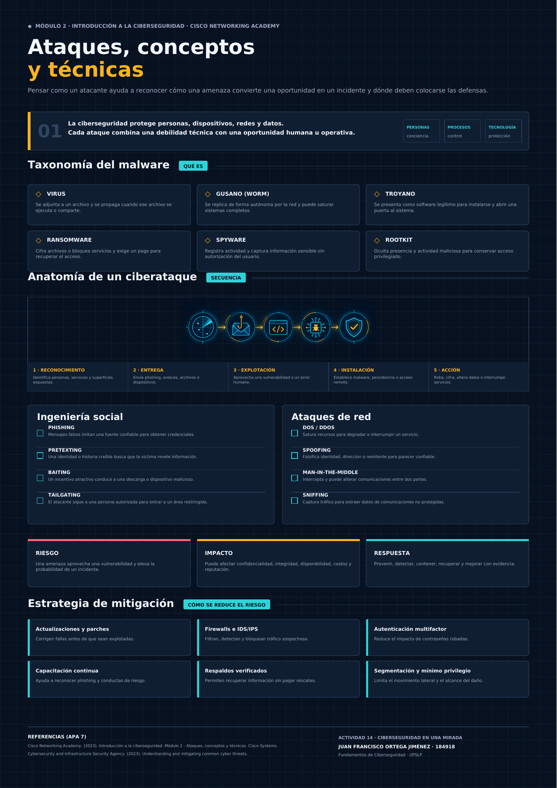
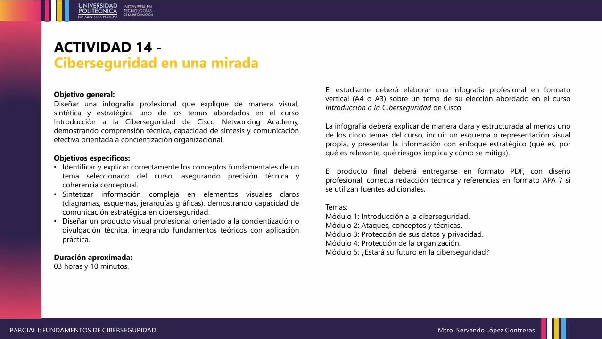
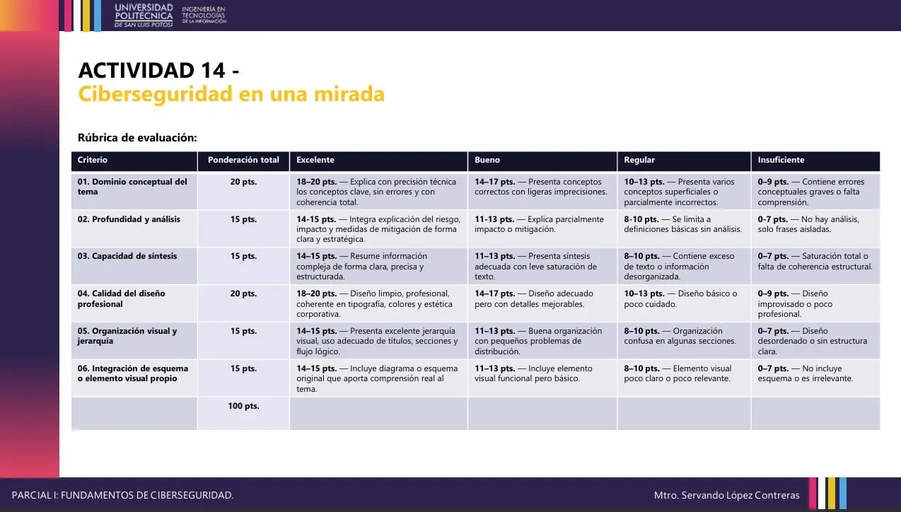
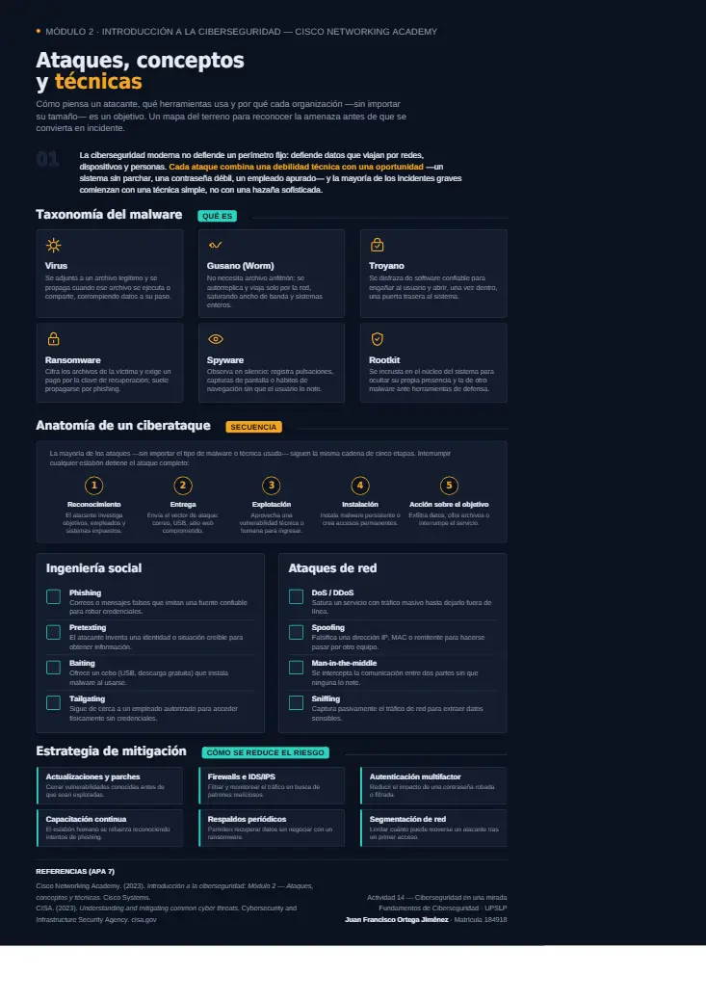

Malware
Virus, gusanos, troyanos, ransomware, spyware y rootkits se diferencian por su forma de propagación, ocultamiento e impacto.
Parcial 01 · Infografía académica
Síntesis visual del Módulo 2 de Cisco Networking Academy: malware, ingeniería social, ataques de red, anatomía de un ciberataque, impacto y controles de mitigación.
01 / OBJETIVO
La actividad transforma los conceptos del módulo “Ataques, conceptos y técnicas” en una infografía dirigida a concientización organizacional. El objetivo es reconocer qué tipos de amenaza existen, cómo avanza un ataque, qué impacto puede producir y qué controles reducen el riesgo.
02 / FUNDAMENTACIÓN
Virus, gusanos, troyanos, ransomware, spyware y rootkits se diferencian por su forma de propagación, ocultamiento e impacto.
Phishing, pretexting, baiting y tailgating explotan confianza, urgencia, curiosidad o acceso físico.
DoS/DDoS, spoofing, man-in-the-middle y sniffing afectan disponibilidad, autenticidad o confidencialidad.
La reducción del riesgo exige controles preventivos, detectivos y de recuperación que funcionen en conjunto.
03 / PROCESO DE DISEÑO
04 / INFOGRAFÍA FINAL
La pieza final utiliza una paleta oscura con acentos cian y ámbar, tarjetas comparables, un flujo central de cinco etapas y controles defensivos agrupados por objetivo.

05 / EVIDENCIA DEL PROCESO



06 / ARCHIVO ENTREGABLE
07 / CUMPLIMIENTO DE RÚBRICA
Las definiciones distinguen malware, ingeniería social y ataques de red sin mezclarlos.
Se relacionan amenaza, vulnerabilidad, riesgo, impacto y medidas de mitigación.
La información se resume mediante tarjetas, frases breves y comparaciones directas.
La paleta, tipografía, retícula y espaciado mantienen coherencia visual.
El flujo conduce del concepto y las amenazas hacia el impacto y la respuesta.
El ciclo de cinco etapas representa el avance del ataque y favorece la comprensión.
08 / CONCLUSIÓN
La actividad permitió comprobar que una amenaza no se reduce con una sola herramienta. Las actualizaciones disminuyen vulnerabilidades, la autenticación multifactor protege identidades, la segmentación limita el alcance, los respaldos apoyan la recuperación y la capacitación reduce oportunidades de ingeniería social. La defensa efectiva surge de combinar personas, procesos y tecnología.
{kind=link}